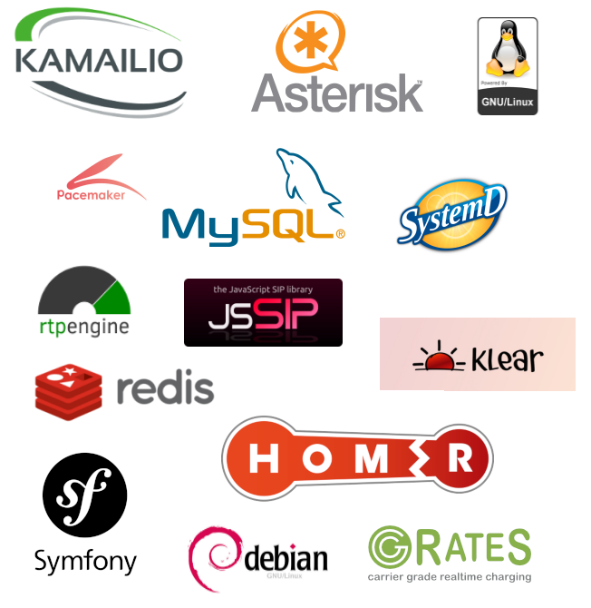

¿Qué hay dentro de IvozProvider?¶
IvozProvider utiliza proyectos de Software Libre bien conocidos y estables para cumplir con las diferentes tareas requeridas de la plataforma.
Nada mejor que una imagen para mostrar todo el software que está integrado en IvozProvider:
Nota
No podemos enfatizar lo suficiente nuestra gratitud a los desarrolladores y comunidades de estos proyectos.
La tarea de cada uno de estos programas se detallará en profundidad en el bloque Arquitectura general de la plataforma.